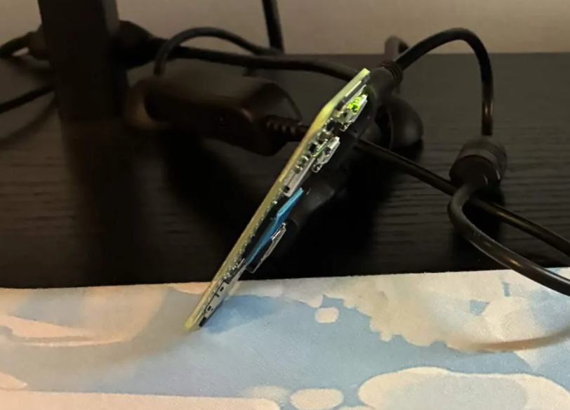

Prologue
If you don’t care for the personality aspects, skip this section. Writing C++ in a terminal with pretty colors is still hitting my brain funny, making this “mini jam” so much more fun. I did less work yesterday since I didn’t caffeinate efficiently, caffeine appears to be directly correlated with output. I have only had few crisi (is that the plural?) about whether or not I am using my time properly, but then I realized this is recreational C++ - there is no right or wrong answer.
Entities
Going into rendering I knew I would need to treat each object uniquely, I envision a beginning where I will have a player rectangle, that can jump around and move on top of floor rectangles. Because of this, I need to determine which rectangle is the player, handle the players movement, color, and size, so I added an Entity class that I store in a std::vector<unique_ptr<Entity>> Entities which I use to call Update / FixedUpdate / Render on each entity that I am tracking. This list will update as projectiles get spawned / deleted, which I learned about std::erase_if, that lets me pass in a vector, and a predicate lambda to decide if each entity should live. If the predicate returns true, the unique_ptr<Entity> is removed from the vector, it gets deleted and its destructor is called. The predicate is checking if Entity->IsAlive() is false (we don’t delete the Entity during game time, we just call Kill() which makes IsAlive() return false). We do this at the end of the game loop to confirm no interruption happens when we choose to delete an Entity.
main.cpp L324–345 The Entity base class: Kill() just flips IsAlive()
class Entity{public: friend Game; Entity(){} virtual ~Entity(){} bool IsAlive() { return bIsAlive;} void Kill() { bIsAlive = false; } protected: virtual void Update(){} virtual void FixedUpdate(){} virtual void Render(){} bool bIsAlive = true;};
view on GitHub →
main.cpp L529–532 Cleaning up dead entities with std::erase_if
void CheckTrackedEntities() { erase_if(Entities, [](const unique_ptr<Entity>& E){ return !E || !E->IsAlive(); } ); }
view on GitHub →
Great now that we have a way of abstracting objects to treat them as unique individuals in a game environment, let’s move onto Rendering.
Rendering
I will not pretend I have fully grasped / realized how rendering works, but I did make it so rectangles of a size / position / color of my choosing renders. I will also not pretend I discovered the boilerplate required to draw pixels using API from the Linux kernel. There were 2 methods I used, the first one did not work out.
<termios> - Uses ANSI escape characters to draw colored pixels in the linux terminal, the unfortunate part about this is each “pixel” is basically a character in a log line. While this was cool, it seemed to be relatively useless for gameplay code, as we want to update pixels anywhere on the screen at any time, not just new terminal lines. This required some flags to be set in order for the colors to render properly.
<linux/fb.h> - Uses actual pixels on the screen, which can be overridden by new log lines. There is more support for resetting the screen and making sure it doesn’t update with terminal lines while playing the game. This allocates 1 pixel per the size of the screen when the program starts, treating the screen more like a grid which is exactly what we need for gameplay. This required a lot more boilerplate, which I actually used a previous vibe coded project as a reference implementation to setup. After getting a pixel setup I made a DrawRectangle method that I am now using to make sure I am setting up color macros correctly (coding manually is more fun when you do it in a neat, reusable way).
main.cpp L97–101 Global defaults and the GameBuffer: 320 × 240 × 2 bytes = 150 KB
// Global Defaultsstatic const int GameWidth = 320;static const int GameHeight = 240;static const int PixelScale = 2;static uint16_t GameBuffer[GameWidth * GameHeight];
view on GitHub →
main.cpp L112–149 DrawPixel, the color macros, and DrawRectangle
void DrawPixel(int PosX, int PosY, Color16 Color){ if(PosX < 0 || PosX >= GameWidth || PosY < 0 || PosY >= GameHeight) { return; } GameBuffer[PosY * GameWidth + PosX] = Color.Value;}; #define CLEAR_COLOR Color16(0, 128, 128)#define RED Color16(255, 0, 0)#define GREEN Color16(0, 255, 0)#define BLUE Color16(0, 0, 255)#define CYAN Color16(0, 255, 255)#define MAGENTA Color16(255, 0, 255)#define YELLOW Color16(255, 255, 0)#define ORANGE Color16(255, 128, 0)#define WHITE Color16(0, 0, 0)#define BLACK Color16(255, 255, 255) void Clear(Color16 Color){ for(int Y = 0; Y < GameHeight; Y++) { for(int X = 0; X < GameWidth; X++) { DrawPixel(X, Y, Color); } }}void DrawRectangle(int PosX, int PosY, int SizeX, int SizeY, Color16 Color){ for(int Y = PosY; Y < PosY + SizeY; Y++) { for(int X = PosX; X < PosX + SizeX; X++) { DrawPixel(X, Y, Color); } }}
view on GitHub →
Next step is to make each rectangle its own entity and prepare the screen to look like an actual level! Exciting! This is equally as exciting as projects that are completely vibe coded, both methods of development involve getting out what you put in, and bringing a vision to life.
Minor Tooling
To make life easier (and maybe others want to run this for some reason?), I added a Run.sh, Build.sh, and BuildAndRun.sh, since I found myself going further and further into my terminal line history.
With that in mind, I thought I would end this post in a photo of the $15 computer I’m programming on. I like to think the Raspberry Pi Zero 2 W is sitting at a 67 degree angle.

Like most humans, I woke up with the urge to use Vim on my Raspberry Pi Zero 2 W to code a game purely in a linux terminal using C++. This is the return of Frog Token Worlds (the unfortunate sequel that nobody asked for).
My Setup
I’m using a Raspberry Pi Zero 2 W, which has 512MB of RAM, it’s about the size of a flash drive and cost me $15. I’m using a keyboard and monitor that I got for free. The power cable I got in a kit, individually it’s worth $9 on Amazon.
The total cost of this setup I’m using is <$25, so if you don’t have a setup to write C++, go mow a single lawn at a discounted price and you now have sufficient technology to become a C++ developer.
About Frog Token Worlds
For those interested, Frog Token Worlds is a game I released on itch.io a 2D and 3D version of, I showed it off at a gaming convention that is no longer with us (ECGC 2022), working alongside the 3D artist Logan Thomas (who is known for his work at Funcom). This work was done pre-employment at Epic Games. Post-employment at Epic Games, I started working on an Unreal Engine 5 version of the game that features multiplayer using the Online Multiplayer Subsystem to host / join peer-to-peer multiplayer, using UE’s networking reflection system (this is unreleased).
AI Disclaimer
I am using AI for documentation to see what libraries exist so I can accelerate my knowledge, using a separate device, there is no AI hooked up to my Pi Zero, I am writing the C++ code by hand, byte by byte. I think AI is an amazing tool for productivity and accomplishing things at a speed that was never before possible (I have other projects where I focus on this further). That being said I am using this as an opportunity to learn more about C++ as an excuse to code more and continue learning about C++ practices, which will make me continue to generate and maintain better C++ code using AI. It has never been easier to learn about what boilerplate is required for input / rendering on a linux terminal.
This is not a tutorial
I will not be going over how to setup your Raspberry Pi to develop C++ games in Vim, if you’re interested in this, consult your AI model of choice. Setup for new environments has never been easier in this new era of technology. Also, I am writing this all in a single main.cpp at the moment because I think it may be neat to make this game in 1 file, but will see how much I regret this decision later.
The most satisfying part about all this work is seeing how tiny the computer is, using the default syntax highlighting in Vim (using hit classics such as #FF0000, #FFFF00, #FF00FF, #00FF00, and #00FFFF) and most importantly of all — no language server!
Update / Fixed Update Loop
“Isn’t this just while(true){}?”
Now for the easiest part about developing a game from scratch in C++, the game loop. If you’ve used Unity or Godot, you’re familiar with void Update() and void FixedUpdate(). It’s important to get this right because it will determine how your game looks and feels to the user. Without going too far in the weeds, Update() is used for input and rendering and has a higher cap of FPS, FixedUpdate() is where your physics run on a fixed frame time. The reason I say Update() has a cap, is because by default, Update() will run >1,000,000 / second.
I use the following at the end of the main game loop to control the FPS (300 being my arbitrary FPS cap). This way, I can just call Update() in my main loop.
main.cpp L473–477 The frame cap at the end of the game loop
CheckTrackedEntities(); // Without this, we will run at >1,000,000 FPS this_thread::sleep_until( chrono::steady_clock::now() + FrameTime()); }
view on GitHub →
For FixedUpdate(), every iteration of the main game loop is checking if(CurTime - LastFrameTime >= (1000ms / FixedFPS)). I previously was doing if(CurTime > (LastFrameTime + (1000ms / FixedFPS))), but decided the former was more clean. These are however mathematically identical. To test this, I incremented a variable of FixedFrames in FixedUpdate() and UpdateFrames in Update(), and made the game end after 5000ms (this is how I found out the while loop ran 6,000,000 times in 5 seconds). This proves how important it is to verify fundamental code that runs frequently works, otherwise we could be performing expensive operations faster than the little Raspberry Pi Zero 2 W can handle.
main.cpp L458–478 The game loop: FixedUpdate on a timer, frame cap at the bottom
void GameLoop() { Initialize(); SpawnEntity(); while(bIsActive) { Update(); CheckInput(); Render(); if(chrono::steady_clock::now() - LastFixedFrame >= (1000ms / FixedFPS)) { FixedUpdate(); } CheckTrackedEntities(); // Without this, we will run at >1,000,000 FPS this_thread::sleep_until( chrono::steady_clock::now() + FrameTime()); } }
view on GitHub →
Input
I started using Termios, which is a linux library for input, generally recommended for UI. There was some boiler plate I used and made my own input system (that is basically just a case statement), which made me realize movement with this is a bit janky - if I were to hold down left, then press space, and let go of space, all input would stop. This is bad for gameplay because I want the player to keep moving left after I jump while moving left.
The alternative I learned about is called “evdev” which is another linux input system that is closer to the kernel, and is used for tracking input events concurrently. I was going to get into rendering today but decided I have only enough wind in me to refactor the Termios input system I worked on into using evdev.
This runs in the Update() loop under a CheckInput() method (for code cleanliness even though it’s all in main.cpp now anyways :D )
After adding evdev, I implemented a method following more boilerplate that detects a keyboard (errors if initialization fails). The key difference (HAHA GET IT?!? KEY?!??? LIKE KEYBOARD KEYS?!?) is evdev gives you access to “on release” which allows you to design a smoother method of holding down more than 1 key while playing.
main.cpp L534–558 evdev input: press (value 1) vs. release (value 0)
void CheckInput() { input_event Ev; if(read(FoundKeyboard, &Ev, sizeof(Ev)) == sizeof(Ev)) { if(InputMap.contains(Ev.code)) { switch(InputMap[Ev.code]) { case(InputKey::Jump): if(Ev.value == 1) { Jump(); } break; case(InputKey::Shoot): if(Ev.value == 1) { ShootDown(); } else if(Ev.value == 0) { ShootReleased(); } break;
view on GitHub →
I did not finish implementing the evdev version as I started getting sleepy and I may be getting sick, hopefully not too sick as I want my brain to be at peak performance so I can finish input and move onto rendering on a linux terminal.
^That’s something a quitter would say. Finished implementing evdev so tomorrow all I have to worry about is rendering. Recreational C++ is da bomb. Aight I’m outta here peace chat.